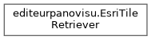
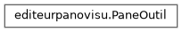

EditeurPanovisu
3.1.0
Éditeur de visites virtuelles 360° Panovisu
Chargement...
Recherche...
Aucune correspondance
Hiérarchie des classes
Aller à la hiérarchie des classes en mode texte


Généré par
1.9.8